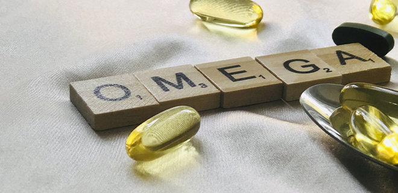
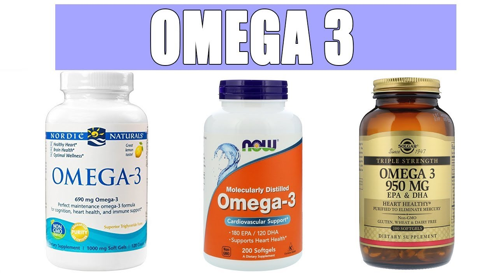
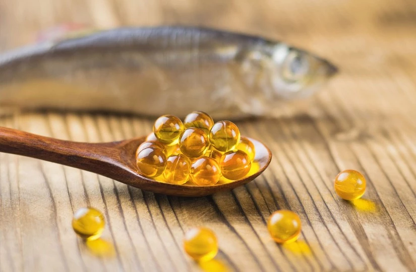

Омега 3: польза и вред. Как выбрать и принимать рыбий жир
Омега 3 или рыбий жир – одна из самых популярных биологически активных пищевых добавок, группа полиненасыщенных жирных кислот (ПНЖК), которые относятся к полезным жирам. Они необходимы для поддержания в организме оптимального жирового (липидного) баланса, снижения концентрации в крови и тканях вредных жиров, более эффективного расщепления холестерина и сжигания жировых отложений.
Омега 3: что это
Омега-3 кислоты наряду с белками являются важным компонентом клеточных мембран, необходимы для полноценного роста и развития, функционирования многих систем. Особо важны 3 жирных кислоты, дефицит которых опасен для здоровья человека. Это:
- ЭПК (эйкозапентаеновая)
- ДГК (докозагексаеновая)
- АЛК (альфа-линоленовая).
Эти жирные кислоты незаменимые, то есть в человеческом организме не вырабатываются, а поступают в него:
- с продуктами питания
- в составе пищевых добавок
Если ежедневный рацион включает достаточное количество продуктов, богатых Омега 3, необходимость в дополнительном приеме добавок отсутствует. На практике продукты питания могут покрыть только потребность в АЛК, но ДГК и ЭПК с пищей поступают в организм в недостаточных количествах. Во избежание последствий их дефицита рекомендуется принимать рыбий жир в капсулах.
Как выбрать Омегу 3 (рыбий жир)
Перед тем, как совершить покупку, нужно разобраться, чем различаются Омега-3, как выбрать добавку. Как правило, основными ингредиентами таких добавок являются ЭПК и ДПГ. Нужно сравнить их суммарное содержание с общим весом капсулы. Польза Омега 3, в которых доля этих важнейших ПНЖК составляет меньше 30%, сомнительна. Меньшая концентрация ЭПК+ДПГ допустима, если добавка содержит и другие омега-кислоты, в том числе АЛК, омега-6, омега-9. Обычно это комбинированные добавки из рыбьего жира и льняного масла. Оптимальное соотношение ЭПК и ДПГ в капсулах для взрослых 2:1 или 3:2, для детей нужны добавки, в которых докозагексаеновой кислоты вдвое больше, чем эйкозапентаеновой.
Английское название добавки может указывать на происхождение жира. Fish oil – жир из мяса рыб, а Liver oil – из печени, Krill – масло криля (креветки).
Еще несколько советов покупателям Омега 3 как выбрать качественный продукт:
- хорошо, если в описании есть информация о степени, технологии очистки. Наиболее прогрессивный метод – молекулярная дистилляция;
- капсулы могут быть мягкими и твердыми, первые проще глотать. Лучше, если оболочка кишечнорастворимая, такие капсулы не создают неприятного послевкусия;
- нужно покупать только сертифицированную продукцию известных брендов;
- обращайте внимание на срок годности, вред Омега 3 при употреблении просроченной продукции очевиден.
Польза и вред Омега 3 для организма
Врачи рекомендует принимать Омега-3 при заболеваниях ЦНС, суставов, синдроме хронической усталости, дерматологических проблемах, для ускорения реабилитации после инфаркта, инсульта, переломов, а также профилактики этих состояний. Польза Омега 3 разносторонняя:
- повышают эластичность сосудов, снижают риск развития атеросклероза;
- обеспечивают полноценное функционирование головного мозга и ЦНС;
- укрепляют суставы;
- улучшают состояние кожи;
- стабилизируют психоэмоциональное состояние;
- обладают противовоспалительным эффектом, повышают выносливость, сопротивляемость инфекциям;
- благотворно влияют на репродуктивную сферу.
Вред Омега 3 в основном отмечается при передозировке, индивидуальной непереносимости, приеме добавок сомнительного происхождения. При ряде заболеваний (желче-и мочекаменная болезнь, туберкулез, дисфункции щитовидной железы, повышенная кровоточивость) добавка противопоказана.
В каких продуктах содержится Омега 3
Рекордсменом по содержанию ЭПК и ДПГ является жирная морская рыба, в особенности выловленная в северных водах – атлантический лосось, сельдь, сардины, радужная форель, палтус, тунец. Богаты ими и морепродукты – криль, устрицы, крабы, гребешки. АЛК содержится в семенах льна, чиа, во многих растительных маслах – льняном, рапсовом, оливковом, горчичном.
Но рыбу обычно подвергают термической обработке, при которой значительная часть ценных жирных кислот разрушается. А в магазинах в основном продается рыба с рыбных ферм, менее ценная. Поэтому наш рацион полностью не покрывает потребность в жирных кислотах и его необходимо дополнять омега-кислотами в капсулах.
Как принимать рыбий жир в капсулах
Капсулы Омега 3 рекомендуется принимать во время еды. Дозировка зависит от концентрации действующих веществ, разовая порция обычно составляет 1-2 капсулы, а принимать их следует 3 раза в день.
Рыбий жир – необходимая пищевая добавка
Рыбий жир в капсулах – источник важных для организма Омега-3 кислот, регулярный прием этой добавки позволяет компенсировать их дефицит в рационе. Но не все добавки одинаково полезны, недобросовестные производители выпускают «пустышки» с минимальным содержанием действующих веществ, добавки из плохо очищенного или окислившегося сырья, которые опасны для здоровья. Немало на рынке и подделок популярных брендов. Поэтому приобретать данный БАД нужно у проверенных поставщиков.